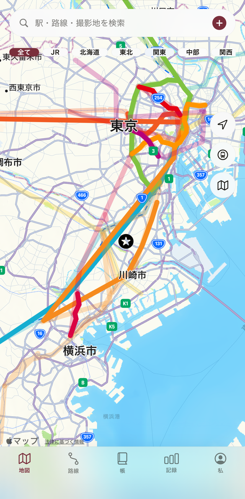
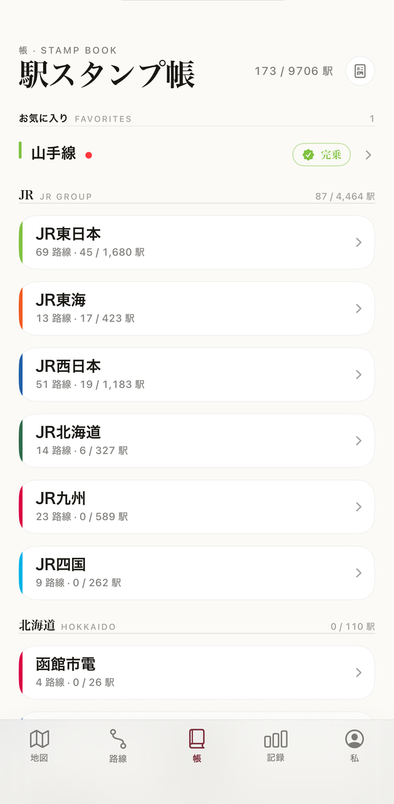
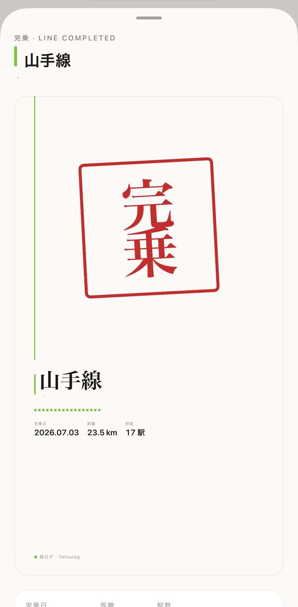

地図の駅をタップするだけで乗車を記録。乗った路線の色がそのまま地図に広がります。全国163社・571路線・10,096駅の乗りつぶしを、鉄ログでスタンプ帳のように記録しましょう。
地図の駅をタップするだけ。乗った日付と区間を鉄ログが記録します。
乗った路線の色が地図に広がります。未乗の区間はグレーのまま、乗った実感が一目でわかります。
路線を完乗すると、朱色の「完乗」スタンプが押されます。帳面のページが少しずつ埋まっていきます。
JRグループ・大手私鉄・地方私鉄・第三セクターの路線データをあらかじめ収録。山手線一周でも、全国完乗でも、鉄ログが記録を引き継ぎます。



昔の乗車履歴もあとから登録できます。今日から始めても、過去の完乗記録はそのまま有効です。
起点と終点を選ぶだけで、区間内の駅をまとめて乗車済みにできます。
路線を完乗すると、朱印風の記念カードが自動で作られます。SNSでのシェアにも使えます。
都道府県ごとの乗車率を地図の濃淡で可視化。旅の足跡が色でわかります。
スタンプ帳をPDFで書き出して、印刷したり手元に保存したりできます。
記録はiCloudで同期。iPhoneでもiPadでも同じ帳面が開けます。無料でご利用いただけます。
近日 App Store 公開予定。